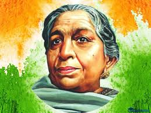

About Sarojini Naidu
Sarojini Naidu (1879–1949) was a remarkable Indian freedom fighter, poet, and political leader who played a significant role in India's struggle for independence from British rule. Often referred to as the "Nightingale of India," she was not only a talented poet but also an eloquent speaker and a passionate advocate for social justice and women's rights.Sarojini Naidu (1879–1949) was an Indian independence activist and a prominent poet. She played a significant role in the freedom struggle and was often referred to as the "Nightingale of India" due to her melodious poetry.
Early Life and Education:
Sarojini Naidu was born on February 13, 1879, in Hyderabad, India, which was then a part of the Nizam's dominion. She came from a well-educated family and was encouraged to pursue her studies. She studied in India and later in England.
Poetry and Literature:
Naidu's literary talents were evident from an early age. Her poetry was known for its lyrical beauty, vivid imagery, and strong emotional resonance. She wrote on a variety of themes, including patriotism, nature, love, and social issues. Some of her well-known works include "In the Bazaars of Hyderabad," "The Golden Threshold," and "The Bird of Time."
Freedom Struggle:
Sarojini Naidu was deeply committed to India's struggle for independence. She joined Mahatma Gandhi's Non-Cooperation Movement and actively participated in protests, demonstrations, and civil disobedience campaigns. She used her literary and oratorical skills to spread the message of freedom and inspire fellow Indians.
Political Leadership:
Naidu was a prominent figure in the Indian National Congress. She was one of the few women leaders at the forefront of India's political landscape during the pre-independence era. She held several leadership positions within the Congress and worked alongside other prominent leaders like Jawaharlal Nehru.
International Diplomacy:
Naidu's leadership and eloquence extended beyond India's borders. She represented India at various international forums and conferences, advocating for India's independence and seeking support from the international community.
Women's Empowerment:
Naidu was a staunch advocate for women's rights and empowerment. She believed in the importance of education for women and encouraged their active participation in social and political activities.
Legacy:
Sarojini Naidu's contributions to India's freedom struggle and her literary achievements have left a lasting legacy. She remains an inspirational figure for her dedication to national pride, social progress, and artistic expression.
Passing and Remembrance:
Sarojini Naidu passed away on March 2, 1949. Her legacy continues to be celebrated in India, and she is remembered for her role as a poet, freedom fighter, and women's rights advocate.
conclusion:
Sarojini Naidu's life and work exemplify the spirit of courage, determination, and creativity that defined India's struggle for independence. Her poetry and contributions continue to inspire generations, and she is celebrated as one of India's most iconic and revered figures.